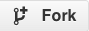
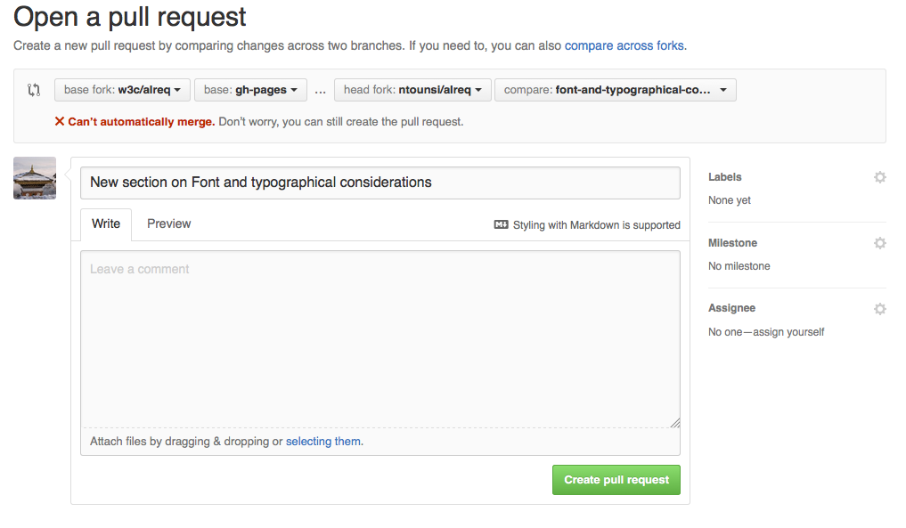
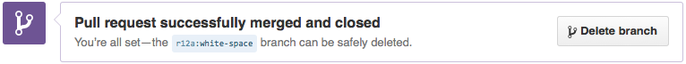

The W3C Internationalization Activity has task forces which use github for document development. This page provides guidelines to help people contribute content if they are unfamiliar with github. Some of this information is a shameless copy of text from the Test the Web Forward documentation.
For the examples we will use the github username myUserName and we'll use a repository (repo) name, repoName. You should substitute your own username wherever you see myUserName, and the name of the repo you want to work with for repoName.
If you have comments or suggestions about how to improve this page, feel free to raise a Github issue.
This should be the email address you used to create the account in Step 1.
Then type:
$ git config --global push.default upstream
This ensures that git push will never unintentionally create or update
a remote branch.
(Optional) If you don't want to enter your username and password every
time you talk to the remote server, you'll need to set up password caching.
See Caching your GitHub password in Git.
The repository that you contribute to will depend on the document that your task force is working on. For example, https://github.com/w3c/alreq. The following diagram illustrates the basics.
We'll spend a moment in this section familiarising you with the basic setup. The following sections will indicate the detailed steps you need to take.
In a typical scenario, you will be working with an upstream repository (repo) that has a URL beginning with https:/github.com/w3c/. This is the W3C repo – it is managed by the people who have editor access for your project, unless you are one of those people you don't have access to this, you can only propose changes to it. You will make a fork of that repo on github, which has a URL beginning with https://github.com/myUserName. A fork is basically just a copy of the W3C repository in which you can change things at will. It sits on the github server and from time to time will be referred to in this document as the origin.
Then you will typically clone your fork to a directory on your local computer, to make it easier to edit content with authoring tools and the like, however it is also possible just edit on the github site.
If you have cloned your fork to your desktop, you should update it regularly so that it matches the W3C repo. You do this by fetching the changes from the W3C repo to your local copy and merging them with what's on your hard disk. You'll then need to push those changes on to your fork on github, so that that is in synch too.
As you edit content files on your computer, you'll need to get them into your fork on github. To do this you need to select the files and add them (which basically just identifies them as ready for the next stage). Then you commit them, and finally you push them (upload them) to your fork.
Usually, prior to doing the add, commit, push routine, you would create a branch. This is rather like a walled garden within which you'll be making and managing changes. You can have any number of branches.
Once you have made changes and you want to send those for incorporation into the W3C repo, and once you have pushed those changes to your fork on the github site, you raise a pull request for the branch you were working in. The pull request informs the guardians of the W3C repo that you want to contribute some changes. Those guardians may simply merge your changes into the W3C repo, but typically they will look at your suggestions and allow some time for others to review them. You may need to change some things in the light of feedback before your content is merged with the W3C repo. Sometimes, the editors may take your code and add parts of it or add something along similar lines, rather than just merging the documents.
Once you have Git set up, you will need to fork the test repository. This
will enable you to submit your proposed changes using a pull request (more on this below).
In the browser, go the the GitHub page for the W3C repository, ie. https:/github.com/w3c/repoName/.
Click the  button in the upper right.
The fork will take several seconds, then you will be redirected to your
GitHub page for this forked repository, ie. https://github.com/myUserName/repoName/.
If your fork was successful, the next step is to clone (download) a copy of your forked repo.
At the command prompt, use cd to get to a directory where you want to keep your fork. We're about to create a subdirectory within the directory you just moved to: the subdirectory will be called repoName, and will contain all the files for that fork.
where myUserName is your github username, and repoName is the name of the repository. This will download the tests into the subdirectory we just mentioned.
You should now have a full copy of the forked repository on your local
machine. Feel free to browse the directories on your hard drive. You can also
browse them on github.com and see the full history of contributions
there.
Now we describe steps to create content and how to request that the changes be merged into the content on the W3C repo.
Before you start on these steps, ensure that you have fetched the latest files from the W3C repo by following the steps in the previous section!
Also, ensure that you start from the gh-pages branch, otherwise you'll end up with a horrible nested mess and you'll be very embarrassed because someone will have to spend a while digging you out. You have been warned!
Before you submit your changes for review and contribution to the W3C
repo, you'll need to first commit them locally, where you now have your own
personal version control system with git. In fact, as you are making your changes, you may want to save versions of your work as you go before you submit
them to be reviewed and merged.
When you're ready to save a version of your work, go to the command
prompt and cd to the directory where your files are.
First, ask git what new or modified files you have:
$ git status
This will show you files that have been added or modified.
For all new or modified files, you need to tell git to add them to the
list of things you'd like to commit:
$ git add [file1] [file2] ... [fileN]
Or:
$ git add [directory_of_files]
Run git status again to see what you have on the 'Changes to be
committed' list. These files are now staged.
(Alternatively, you can run git diff --staged, which will show you the
diff of things to be committed.)
Once you've added everything, you can commit and add a message to this
set of changes:
$ git commit -m "New section on Arabic joining forms"
Make the message as short but as informative as possible. Others will need to get a clear idea of what these changes are about by reading this text.
Repeat these steps as many times as you'd like before you submit your changes for inclusion in the W3C repo.
The first thing you do before submitting changes to the W3C repo is to push
them back up to your fork on the server:
$ git push origin myBranchName
Here, origin refers to your fork of the repo on the github server. You just use the word origin, git should know where that is. myBranchName should be the name of your branch that
created earlier.
Now you can send a message that you have changes or additions you'd like
to be reviewed and merged into the W3C repository. You do
this by using a pull request. In a browser, open the GitHub page for your
forked repository, ie. https://github.com/myUserName/repoName/.
Now create a pull request. There are several ways to create a PR in the
GitHub UI. Below is one method and others can be found on GitHub.com
a. Click on the button. You should see something like this:

b. Pay careful attention to the line of buttons at the top of the picture above. Here's an example:
Moving from left to right, the first button should say base fork: w3c/repoName, the second base: gh-pages, the third, head fork: myUserName/repoName, and the one on the right should read compare: myBranchName.
Substitute the appropriate names for repoName, myUserName and myBranchName.
If you see 'There isn't anything to compare', make sure your fork and your branch are selected on the right side.
f. If you'd like to add more detailed comments or a title other than one that is suggested, edit the fields below the buttons.
Once you submit your pull request, a reviewer will check your proposed changes
for correctness and style. It is likely that this process will lead to some
comments asking for modifications to your code. When you are ready to make the
changes, follow these steps:
If you are no longer in the branch you were previously working on (in examples above this was myBranchName), check it out again, eg.
$ git checkout myBranchName
Make the changes needed to address the comments, and commit them just like
before.
Push the changes to the branch on your forked repo:
$ git push origin myBranchName
The pull request will automatically be updated with the new commit.
Sometimes it takes multiple iterations through a review before the changes are
finally accepted. Don't worry about this, it's totally normal. The goal of
review is to work together to create the best possible content for your task force.
Once your pull request has been accepted, you will be notified in the GitHub
UI and you may get an email. At this point, your changes have been merged
into the W3C repo. You do not need to take any further action
on the files you submittted, but you should delete your branch. This can easily be done in
the GitHub UI by navigating to the pull requests and clicking the
'Delete Branch' button.

Alternatively, you can delete the branch on the command line.
$ git push origin --delete myBranchName
Then fetch the latest files from the W3C repo and push them to your fork, as described earlier, so that you are up to date with everything.

 button. You should see something like this:
button. You should see something like this: